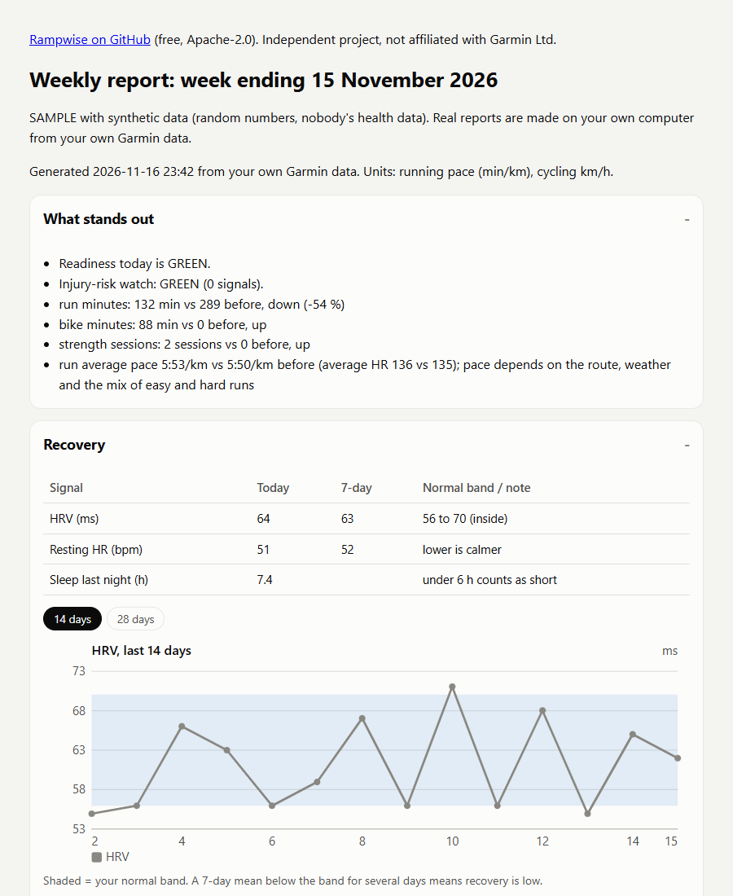

Rampwise: a free, open-source AI endurance coach for your Garmin data
Rampwise gives runners and cyclists evidence-labelled training plans, a daily adjustment of tomorrow's session, an injury-risk watch and daily, weekly and monthly reports. It works from your own Garmin data, runs inside an AI agent such as Claude Code, and costs nothing.
Get it on GitHub See a sample report Releases
Independent open-source project. Not affiliated with, endorsed by or sponsored by Garmin Ltd. Garmin is a trademark of Garmin Ltd. Experimental: read the disclaimer.

What it does
- Plans rolling 4-week running, cycling and strength plans from your last weeks of training, with reset and deload weeks and a +10 % step cap.
- Adapts tomorrow's session to your readiness, injury-risk watch and how much of the plan you did: keep, a small step up, easier, shorter, or rest. It prepares the calendar update and applies it only after you agree.
- Watches for injury risk from load spikes, rest streaks, low recovery, short sleep and your own pain check-ins. Flags are prompts with an evidence label, never a diagnosis.
- Analyses your latest session against the last similar one, and this week against last week.
- Reports as Markdown with figures or one interactive HTML file, with goal meters when you set a goal.
- Asks, never assumes your heart-rate zones, equipment and starting weights, and labels every rule research, practice or gap.
How to install (Claude Code)
/plugin marketplace add Azahir21/rampwise /plugin install rampwise@rampwise
You also need a Garmin account with Personal API access and the garmin-personal-mcp server (MIT, by Mason Levy), Python 3.10+, and pip install fitdecode. Then ask your agent: "Set up my Rampwise coach." Other Agent Skills clients: see the install section.
Frequently asked questions
What is Rampwise?
A free, open-source set of AI agent skills that coaches a runner or cyclist from their own Garmin data. It builds training plans, adapts the next session to how you are doing, watches for injury-risk signals and writes daily, weekly and monthly reports.
Is Rampwise free?
Yes, it is licensed under Apache-2.0. You need your own Garmin account with Personal API access and an AI agent client such as Claude Code, which has its own terms and costs.
Is Rampwise affiliated with Garmin?
No. It is an independent project. Garmin is a trademark of Garmin Ltd. and is used only to say which data the tool reads.
Does my data leave my computer?
Your Garmin data is read through a local server and your own key, and your athlete file, plans and reports are stored on your machine. The AI model provider you use sees whatever the coach prints during a session. Weather lookups are optional and only run with your consent. See the privacy notes.
Does it replace a human coach or a doctor?
No. It is experimental software, not medical advice. Its injury-risk flags are prompts to look closer, not a diagnosis. Pain that changes how you move or lasts more than a few days needs a clinician.
How are its training rules chosen?
Every rule is labelled research (a paper supports the direction), practice (a coaching convention) or gap (nothing supports it), and the papers are listed in the paper list. It never promises a result or a date for a goal.
Which AI tools and watches does it work with?
It is built as a Claude Code plugin and as plain Agent Skills for other clients; Codex and other clients are untested. It was built and tested on one person's Garmin data and has not been verified on other watches. A three-month field test by the author starts now; results will be published honestly.
Links
- Source code and README (Apache-2.0)
- Sample weekly report (synthetic data)
- Changelog and issues
- Credits and licences
Rampwise is made by Kei (Azahir21) and contributors.